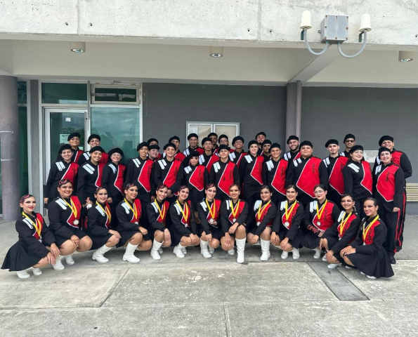

Sobre Nosotros
La Banda de la UPR en Ponce es una organización estudiantil dedicada a la música, el compañerismo y el orgullo universitario. Nuestro objetivo es representar a la universidad en diferentes actividades, eventos y presentaciones, llevando siempre el espíritu de “Rojo y Negro Siempre”. Formar parte de la banda no solo te permite desarrollar tus habilidades musicales, sino también crear amistades, trabajar en equipo y vivir experiencias inolvidables. No importa si tienes mucha experiencia o estás comenzando, aquí hay un espacio para ti. ¡Únete a nosotros y sé parte de esta gran familia musical!
